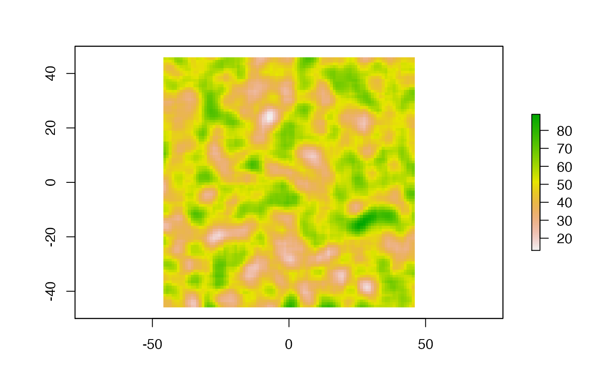

R/single-continuous.R
singleContinuous.RdThis function runs a single-host transmission chain simulation, with a structured host population (such as spatial features) in a continuous space. The simulation stops either at the end of given time (specified by length.sim) or when the number of hosts infected threshold (max.infected) is passed. The movement of hosts on the continuous space map is a random walk (Brownian motion) that can be modified towards a biased random walk where hosts tend to be attracted to higher values of the environmental variable defined by the raster.
singleContinuous( length.sim, max.infected, init.individuals, init.structure, structure.raster, diff.pExit = FALSE, timeDep.pExit = FALSE, hostCount.pExit = FALSE, pExit, param.pExit, diff.pMove = FALSE, timeDep.pMove = FALSE, hostCount.pMove = FALSE, pMove, param.pMove, diff.sdMove = FALSE, timeDep.sdMove = FALSE, hostCount.sdMove = FALSE, sdMove, param.sdMove, attracted.by.raster = FALSE, diff.nContact = FALSE, timeDep.nContact = FALSE, hostCount.nContact = FALSE, nContact, param.nContact, diff.pTrans = FALSE, timeDep.pTrans = FALSE, hostCount.pTrans = FALSE, pTrans, param.pTrans, prefix.host = "H", print.progress = TRUE, print.step = 10 )
| length.sim | specifies the length (in unit of time) over which the simulation should be run. |
|---|---|
| max.infected | specifies the maximum number of hosts that can be infected in the simulation. |
| init.individuals | number of initially infected individuals. |
| init.structure | in which location the initially infected individuals are located. A vector of coordinates in the same coordinate space as the raster. |
| structure.raster | raster object defining the environmental variable. |
| diff.pExit | does pExit depend on the environmental variable (set by the raster) (TRUE/FALSE). |
| timeDep.pExit | is pExit dependent on the absolute time of the simulation? (TRUE/FALSE) |
| hostCount.pExit | does pExit vary with the host count in each raster cell? (TRUE/FALSE); if TRUE, diff.pExit should be TRUE. |
| pExit | function that gives the probability to exit the simulation for an infected host (either moving out, dying, etc.). |
| param.pExit | parameter names (list of functions) for the pExit. |
| diff.pMove | does pMove depend on the environmental variable (set by the raster) (TRUE/FALSE). |
| timeDep.pMove | does pMove depend on the absolute time of the simulation (TRUE/FALSE). |
| hostCount.pMove | does pMove vary with the host count in each raster cell? (TRUE/FALSE); if TRUE, diff.pMove should also be TRUE. |
| pMove | function that gives the probability of a host moving as a function of time. |
| param.pMove | parameter names (list of functions) for the pMove. |
| diff.sdMove | does sdMove depend on the environmental variable (set by the raster) (TRUE/FALSE). |
| timeDep.sdMove | does sdMove depend on the absolute time of the simulation (TRUE/FALSE). |
| hostCount.sdMove | does sdMove vary with the host count in each raster cell? (TRUE/FALSE); if TRUE, diff.sdMove should be TRUE. |
| sdMove | function that gives the distance traveled (based on coordinates); output is the standard deviation value for the Brownian motion. |
| param.sdMove | parameter names (list of functions) for sdMove. |
| attracted.by.raster | should the hosts be attracted by higher values in the environmental raster? (TRUE/FALSE). |
| diff.nContact | does nContact depend on the environmental variable (set by the raster) (TRUE/FALSE). |
| timeDep.nContact | is nContact dependent on the absolute time of the simulation? (TRUE/FALSE) |
| hostCount.nContact | does nContact vary with the host count in each raster cell? (TRUE/FALSE); if TRUE, diff.nContact should be TRUE. |
| nContact | function that gives the number of potential transmission events per unit of time. |
| param.nContact | parameter names (list of functions) for param.nContact. |
| diff.pTrans | does pTrans depend on the environmental variable (set by the raster) (TRUE/FALSE). |
| timeDep.pTrans | is pTrans dependent on the absolute time of the simulation? (TRUE/FALSE) |
| hostCount.pTrans | does pTrans vary with the host count in each raster cell? (TRUE/FALSE); if TRUE, diff.pTrans should be TRUE. |
| pTrans | function that gives the probability of transmit a pathogen as a function of time since infection. |
| param.pTrans | parameter names (list of functions) for the pExit. |
| prefix.host | character(s) to be used as a prefix for the hosts identification number. |
| print.progress | if TRUE, displays a progress bar (current time/length.sim). |
| print.step | print.progress is TRUE, step with which the progress message will be printed. |
An object of class nosoiSim, containing all results of the simulation.
The pExit and pTrans functions should return a single probability (a number between 0 and 1), and nContact a positive natural number (positive integer) or 0.
The param arguments should be a list of functions or NA. Each item name in the parameter list should have the same name as the argument in the corresponding function.
The use of timeDep (switch to TRUE) makes the corresponding function use the argument prestime (for "present time").
The structure raster provided provided should of class raster. High values of the environmental variable can attract hosts if attracted.by.raster is TRUE.
The pMove function should return a single probability (a number between 0 and 1), and sdMove a real number (keep in mind this number is related to your coordinate space).
The use of diff (switch to TRUE) makes the corresponding function use the argument current.env.value (for "current environmental value").
The use of hostCount (switch to TRUE) makes the corresponding function use the argument host.count.
The user specified function's arguments should follow this order: t (mandatory), prestime (optional, only if timeDep is TRUE),
current.env.value (optional, only if diff is TRUE), host.count (optional, only if hostCount is TRUE) and parameters specified in the list.
For simulations with a discrete structure, see singleDiscrete. For simulations without any structures, see singleNone.
# \donttest{ library(raster) #Generating a raster the for movement set.seed(860) test.raster <- raster(nrows=100, ncols=100, xmn=-50, xmx=50, ymn=-50,ymx=50) test.raster[] <- runif(10000, -80, 180) test.raster <- focal(focal(test.raster, w=matrix(1, 5, 5), mean), w=matrix(1, 5, 5), mean) plot(test.raster)t_incub_fct <- function(x){rnorm(x,mean = 5,sd=1)} p_max_fct <- function(x){rbeta(x,shape1 = 5,shape2=2)} p_Move_fct <- function(t){return(0.1)} sdMove_fct = function(t,current.env.value){return(100/(current.env.value+1))} p_Exit_fct <- function(t){return(0.08)} proba <- function(t,p_max,t_incub){ if(t <= t_incub){p=0} if(t >= t_incub){p=p_max} return(p) } time_contact = function(t){round(rnorm(1, 3, 1), 0)} start.pos <- c(0,0) test.nosoiA <- nosoiSim(type="single", popStructure="continuous", length=200, max.infected=500, init.individuals=1, init.structure=start.pos, structure.raster=test.raster, pMove=p_Move_fct, param.pMove=NA, diff.sdMove=TRUE, sdMove=sdMove_fct, param.sdMove=NA, attracted.by.raster=TRUE, nContact=time_contact, param.nContact=NA, pTrans = proba, param.pTrans = list(p_max=p_max_fct, t_incub=t_incub_fct), pExit=p_Exit_fct, param.pExit=NA)#> #>#>#>#>#> #># }